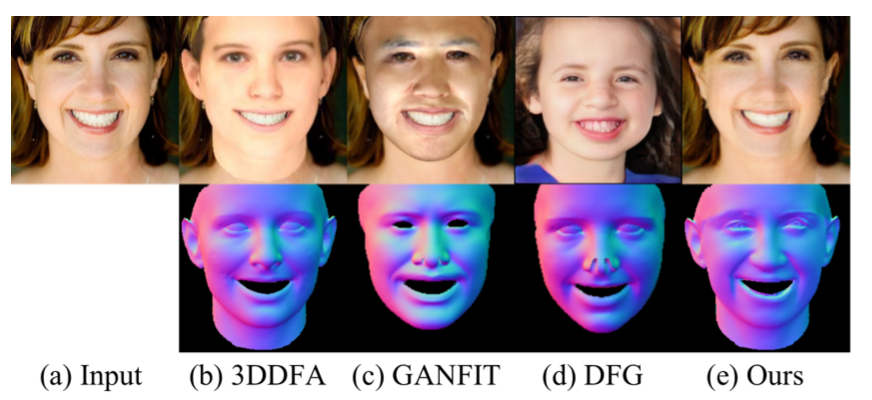
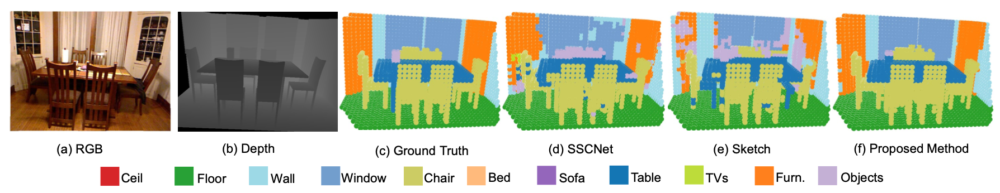
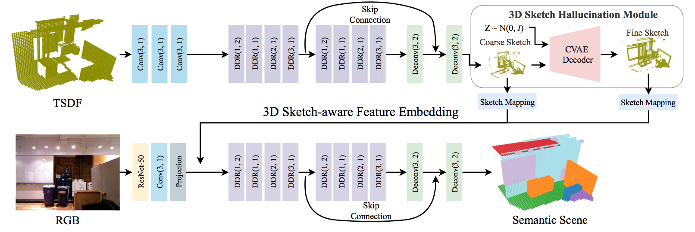
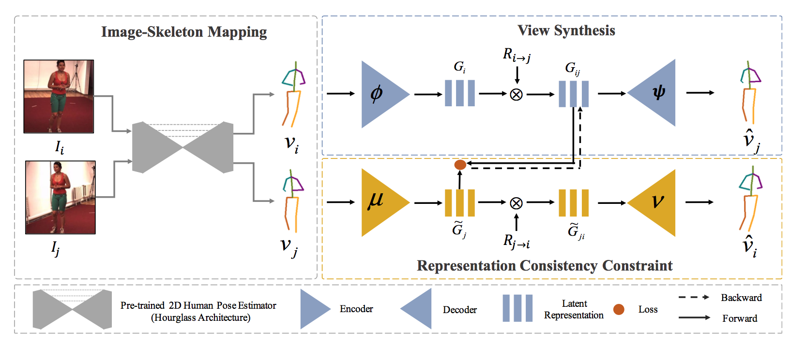

|
I will be joining CUHK / Multimedia Lab as a Post-Doctoral Researcher in Spring 2020, advised by Prof. Xiaogang Wang and Prof. Hongsheng Li. I am currently a Senior Researcher at SenseTime Research. Before join SenseTime, I received my PhD degree in the Department of Information Science, School of Mathematical Sciences, Peking University in 2019. My research interests include computer vision, image processing, with focus on 3d scene understanding, human pose estimation, and deep generative models. |
|  |
Inverting Generative Adversarial Renderer for Face ReconstructionJingtan Piao, Keqiang Sun, Quan Wang, Kwan-Yee Lin+, Hongsheng Li+ IEEE Conference on Computer Vision and Pattern Recognition (CVPR), 2021, Oral presentation. [Paper] [Supplementary Material] [Code] [Project Page] |
|  |
Semantic Scene Completion via Integrating Instances and Scene in-the-LoopYingjie Cai, Xuesong Chen, Chao Zhang, Kwan-Yee Lin+, Xiaogang Wang, Hongsheng Li+ IEEE Conference on Computer Vision and Pattern Recognition (CVPR), 2021. [Paper] [Supplementary Material ] [Code] |
|  |
3D Sketch-aware Semantic Scene Completion via Semi-supervised Structure PriorXiaokang Chen, Kwan-Yee Lin, Chen Qian, Gang Zeng, Hongsheng Li IEEE Conference on Computer Vision and Pattern Recognition (CVPR), 2020. [Paper] [Supplementary Material ] [Code] |
TRB: A Novel Triplet Representation for Understanding 2D Human BodyHaodong Duan, Kwan-Yee Lin, Sheng Jin, Wentao Liu, Chen Qian, Wanli Ouyang IEEE International Conference on Computer Vision (ICCV), 2019, Oral presentation. [Paper] [Dataset] |
|
Make a Face: Towards Arbitrary High Fidelity Face ManipulationShengju Qian, Kwan-Yee Lin, Wayne Wu, Yangxiaokang Liu, Quan Wang, Fumin Shen, Chen Qian, Ran He. IEEE International Conference on Computer Vision (ICCV), 2019. [Paper] |
|
|  |
Weakly-Supervised Discovery of Geometry-Aware Representation for 3D Human Pose EstimationKwan-Yee Lin*, Xipeng Chen*, Wentao Liu, Chen Qian, Liang Lin IEEE Conference on Computer Vision and Pattern Recognition (CVPR), 2019, Oral presentation. [Paper] [Supplementary Material] [Project Page] |
Hallucinated-IQA: No-reference Image Quality Assessment via Adversarial LearningKwan-Yee Lin, Guanxiang Wang. IEEE Conference on Computer Vision and Pattern Recognition (CVPR), 2018. [Paper] [Project Page] [Code and Model] |